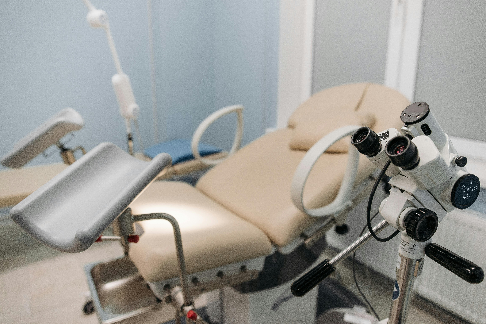
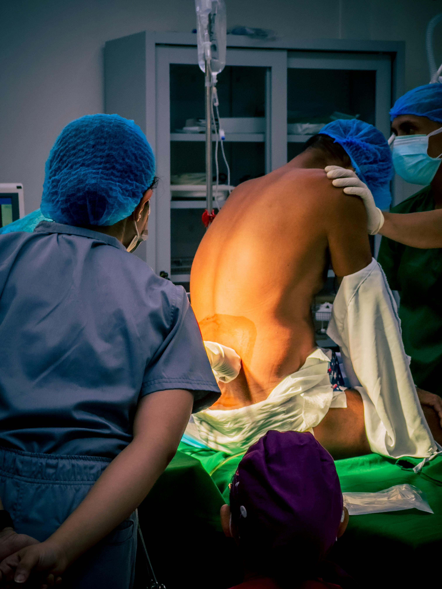
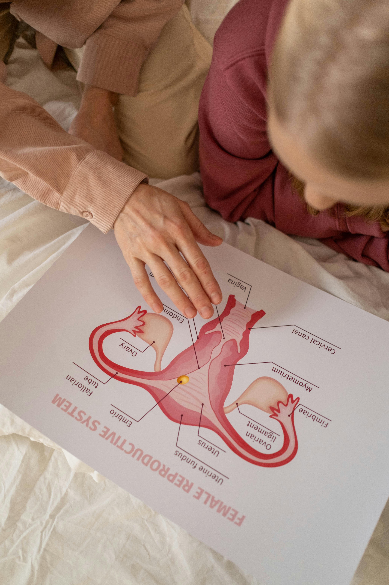

Educational Purposes Only: This website is for educational purposes only. All products are in the pre-clinical development stage. No content contained herein has been reviewed by the FDA. Full Disclaimer →
Rigorous, evidence-driven innovation across an expanding portfolio of independent women's health device programs — spanning surgical instrumentation, pelvic diagnostics, interventional analgesia, and intrapartum monitoring.
NEG+ is committed to developing medical devices that address the persistent, clinically documented gaps in women's pelvic diagnostics and surgical instrumentation. Our R&D process integrates voice-of-customer research, engineering precision, and evidence-based clinical validation from day one.
Each program is designed around a closed-loop evidence system — where user acceptance research informs engineering requirements, which drive a predefined publication strategy — creating the self-reinforcing evidence cycle that NIH reviewers and institutional investors recognize as fundable, adoption-ready innovation.
Our development principles: clinical-driven design, evidence-based innovation, iterative refinement, patient safety primacy, and data-driven optimization.
Automated reusable handle + single-use disposable crown system for laparoscopic and robotic-assisted total hysterectomy. Integrates motor-assisted 360° circumferential electrosurgical colpotomy, pneumatic vaginal stenting (balloon insufflation), and microprocessor-regulated energy delivery — targeting a 60-second colpotomy time vs. the 8–14 minute current standard of care, with <2mm thermal spread.
| Parameter | Data |
|---|---|
| TAM (US Disposable) | $290M+ |
| Primary Target Surgeons | ~3,500 high-volume MIGS surgeons (>100 TLH/year) |
| WTP — Disposable Crown ASP | $400–$600 |
| Reimbursement | CPT 58571/58573 — absorbed in existing DRG (LOW risk) |
| Regulatory Pathway | FDA 510(k) — mechanical + electrosurgical + balloon |
| Predicate Strategy | RUMI II/VCare + Thunderbeat/LigaSure combo |
| Regulatory Timeline | 3–4 years to clearance |
| Estimated Reg. Cost | $800K–$1.2M |
| Individual Exit Range | $250–$400M |
| Exit Profile | Strategic fit with established medtech platforms in gynecologic surgery |
Clinical needs assessment complete; asymmetric blade geometry and rotation mechanism patent application filed; voice-of-customer research with MIGS KOLs
CAD finalization; prototype fabrication; bench testing of rotation mechanism, balloon insufflation, and energy delivery; design controls initiation per 21 CFR Part 820
200-cycle mechanical endurance testing; ex vivo/cadaveric colpotomy validation; thermal spread thermocouple mapping; biocompatibility assessment
Q-Sub meeting with FDA; IRB approval; multicenter human factors validation; primary endpoints: colpotomy time, thermal spread, cuff integrity rate
510(k) submission; Design History File complete; Quality Management System in place per ISO 13485
GPO contracting; KOL-led clinical champion program; publications in JMIG and AJOG; robotic surgery program director targeted outreach
Supplemental 510(k) to extend cleared indication to robotic-assisted hysterectomy (RALH) platforms (da Vinci); additional indication pursuit for trachelectomy, myomectomy colpotomy access, and sacrocolpopexy adjunct use. KOL-authored white paper program supports expanded clinical adoption across MIGS subspecialties.
CE marking under EU MDR (Class IIb — active surgical device); UK MHRA registration; Health Canada Class III device license. Target markets: Germany, France, Benelux, UK, Canada, Australia (TGA). International distributor partnership strategy aligned with strategic acquirer roadmap.

Sensorized conformable anatomical vaginal sleeve system with indexed ring electronics, providing real-time simultaneous measurement of all nine POP-Q reference points. Outputs a digital twin 3D visualization and HL7 FHIR-compliant EMR export — eliminating the 30% inter-observer variability (ICC 0.45–0.75) inherent to manual POP-Q assessment that drives surgical misclassification and 37.7% recurrence rates.
| Stream | Price Point |
|---|---|
| Device Kit (Capital) | $8,500–$12,500 initial |
| Single-Use Sleeve (Consumable) | $95–$145 per exam |
| SaaS Platform License | $350–$750/month per site |
| Target Reimbursement | $125–$185/exam (professional component) |
| CPT Strategy | CPT 59899 → Category III → Category I (3–5 yr) |
| Market Size (2025) | $1.06B → $1.7B by 2030 (6.6% CAGR) |
| FDA Clearance Target | Q1 2028 |
| Series A Target | $4–5M at Q3 2027 |
Multi-specialty survey (urogynecologists, high-volume OB/GYNs): TAM framework — workflow pain points, technology adoption readiness, institutional & reimbursement context. Target n=80–120. Establishes non-promotional baseline for NIH reviewers.
Survey-driven FDA-compliant design inputs; sensor accuracy requirements, software architecture specifications; NIH STTR Phase I submission to NICHD/NIBIB. NSF STTR parallel track for algorithm and sensor engineering.
Sensor accuracy vs. gold-standard manual POP-Q; intra/inter-user reproducibility (ICC >0.90 target); signal stability; software output validation. Cadaveric and simulated clinical cases.
IRB-approved EFS; physician experience study (prospective); primary manuscript: "Automated Sensorized POP-Q vs. Manual Gold Standard" → AJOG (IF 9.8). Secondary: IUGA Journal, JMIG.
Multicenter prospective accuracy study; STTR subaward partner sites provide CRC, IRB, OR access. 510(k) + De Novo SaMD submission — FDA clearance target Q1 2028.
AMA CPT Editorial Panel application for Category III tracking code (AUGS coding committee endorsement). Platform positions NEG+ for strategic partnership or acquisition by established medtech companies serving the urogynecology and pelvic floor market.
Supplemental regulatory submissions to broaden cleared indication beyond preoperative POP staging: (a) postpartum pelvic floor recovery monitoring; (b) male pelvic floor assessment for post-prostatectomy incontinence; (c) RTM code-supported asynchronous remote monitoring. Expands TAM from $1.06B toward a $2.8B+ addressable market.
CE marking under EU MDR (SaMD — Class IIa/IIb); MHRA registration; Health Canada Medical Device License. Priority markets: NHS urogynecology programs (UK), DACH urogynecology centers, Australia. WHO/FIGO partnership for global POP staging standardization aligned with EU pelvic floor care guidelines.

A novel finger-mounted modular system integrating: (a) a reusable sensing module (RSM) with PMUT ultrasound ring array and near-infrared optical ring for real-time nerve localization and vascular avoidance; (b) a sterile disposable delivery module (DSUM) with spring-loaded retractable needles and fluid distribution; and (c) the Pudendal Nerve Localization Instrument (PNLI) with bilateral ischial spine registration arms and a spherical focused acoustic transducer — all within a single-operator workflow.
| Phase | Objective |
|---|---|
| Phase 0 Survey | TAM instrument (n=80–120); specialties: OB/GYN, Urogyn, MFM, CNM, Pain, Anesthesia |
| Bench Testing | PMUT array accuracy; NIR vascular detection threshold; needle deployment force |
| Cadaveric EFS | Nerve localization accuracy vs. gold-standard; CLEAR/CAUTION threshold calibration |
| Human Factors | Single-operator ergonomic assessment across 5 specialty groups; workflow integration |
| IDE Clinical Trial | Multicenter prospective; primary endpoint: first-attempt success rate (target: ≥85%) |
| Reimbursement | CPT 64430 existing code; new technology supplement code application |
| FDA Pathway | 510(k) — combination device (electronics + sensing + delivery) |
| FDA Clearance Target | 2028–2029 |
REDCap survey instrument across 5 specialty groups. TAM domains: perceived usefulness, ease of use, behavioral intention to adopt. Target n=80–120. Cost acceptance thresholds and CPT code confidence assessment.
Reusable sensing module (RSM) engineering: PMUT ring array calibration, NIR optical ring sensitivity. Disposable delivery module (DSUM): needle deployment mechanism, fluid distribution system. Provisional patent prosecution.
Pelvis model validation of PNLI ischial spine registration; PMUT nerve localization accuracy; CLEAR/CAUTION/ABORT threshold definition; mechanical reliability 200-cycle endurance.
IRB-approved EFS with STTR academic partner. Human factors validation — attending vs. fellow vs. resident; obstetric and outpatient pelvic pain settings. Primary: nerve localization accuracy vs. anatomical landmark.
Prospective, multicenter IDE trial. Primary endpoint: first-attempt success rate ≥85%. Secondary: LAST event rate, operator confidence score, workflow integration rating. Publication: AJOG, Obstetrics & Gynecology.
510(k) submission — combination device strategy. Commercial targeting: academic OB/GYN programs, urogynecology practices, labor & delivery units, pain management centers.
Supplemental 510(k) to extend cleared indication beyond obstetric pudendal nerve block: (a) pudendal neuralgia and chronic pelvic pain management; (b) pain medicine and regional anesthesia procedural suites; (c) male pudendal nerve block applications. Expands target specialty base from OB/GYN to Pain Medicine and Anesthesiology, significantly broadening commercial reach.
CE marking under EU MDR (Class IIb — active sensing + drug delivery combination); MHRA and Health Canada registration. Priority markets: EU midwifery-led maternity programs, UK NHS obstetric anesthesia, Scandinavian countries with high midwife-led delivery rates. WHO Essential Medicines List alignment strategy for LMIC market access.

An autonomous, AI-enabled intrapartum platform targeting critical unmet needs in labor and delivery monitoring. MUMS addresses a $2.45B global market where the foundational clinical tool — continuous electronic fetal monitoring — has not experienced meaningful autonomous intelligence integration despite being the primary safety instrument in over 3.6 million US births annually. MUMS is developed under a milestone-gated capital strategy: SBIR Phase I funds sensor architecture validation before Series A capital is deployed.
| Parameter | Profile |
|---|---|
| Global Market | $2.45B intrapartum monitoring (6.7% CAGR) |
| US Births / Year | ~3.6M — 42% covered by Medicaid |
| Primary Indication | High-risk labor and delivery monitoring |
| Regulatory Pathway | De Novo / PMA (AI/ML-enabled device) |
| Policy Alignment | White House Blueprint · HRSA Mandate · CDC Maternal Action Plan |
| Reimbursement Strategy | NTAP → National Coverage Determination → Medicaid state coverage |
| Non-Dilutive Funding | NIH SBIR Phase I — sensor architecture validation |
| Capital Strategy | Milestone-gated: Series A contingent on Tier 1 device commercial milestones |
NIH SBIR Phase I application to fund sensor architecture validation and preliminary bench testing. Non-dilutive funding secures early development without consuming Series A capital allocated to Tier 1 devices.
Pre-Submission meeting with FDA to confirm De Novo vs. PMA pathway and AI/ML device classification. Q-Sub outcome is the primary gate for Phase I FIH go/no-go decision.
Milestone-gated: initiated only after Q-Sub confirmation and Colpotomizer FDA submission milestone. FIH study establishes sensor performance baseline and safety data.
AI classification concordance vs. gold-standard expert interpretation. Multi-site enrollment at academic L&D centers. Supports SBIR Phase II application and Series A MUMS allocation.
Prospective randomized controlled trial. Co-primary endpoints target reduction in adverse perinatal outcomes vs. standard EFM. NTAP application filed at regulatory submission stage.
Regulatory submission and commercial launch. CMS NCD application, Medicaid state coverage pursuit, and WHO prequalification pathway for global maternal health markets.
Post-approval supplemental submission to expand cleared indication to: (a) high-risk antepartum remote monitoring (RPM codes 99453–99458); (b) telemedicine-integrated fetal surveillance for rural and underserved delivery settings; (c) neonatal early warning system module. Directly aligns with HRSA rural maternal health mandate and CMS telehealth reimbursement expansion.
WHO prequalification pathway for LMIC maternal health deployment; EU MDR Class III equivalent; MHRA registration. Priority markets: UK NHS (65,000+ high-risk births annually), Sub-Saharan Africa via USAID maternal health program alignment, India (top-5 global birth volume). Addresses $1.8B of the $2.45B total intrapartum monitoring TAM outside the US.
Our team brings together engineering, clinical medicine, regulatory science, and commercial strategy — bridging the gap between clinical insight and FDA-cleared product.
Advanced mechanism design, precision manufacturing, materials science for medical-grade applications, CAD optimization for ergonomic clinical use.
Energy delivery platform integration, microprocessor-regulated thermal management, electrical safety testing, <2mm thermal spread engineering.
PMUT ultrasound array design, NIR optical sensing, precision measurement calibration, signal processing algorithms for real-time clinical feedback.
Embedded systems, Bayesian FEM solver, ML compartment classification, HL7 FHIR EMR integration, FDA SaMD framework compliance, cloud analytics.
Study design (EFS, IDE, multicenter RCT), biostatistics, human factors validation, IRB navigation, evidence generation strategy aligned with NIH STTR.
FDA 510(k) / De Novo / IDE submission strategy, Q-Sub meeting preparation, predicate analysis, combination device classification, ISO compliance.
Design History File (DHF), Risk Management File (RMF) per ISO 14971, 21 CFR Part 820 design controls, ISO 13485 QMS architecture.
Contract manufacturing partnerships, process validation, disposable device supply chain management, reusable component lifecycle design.
Direct surgeon and clinician input guide every design decision — voice-of-customer research precedes every engineering specification.
Rigorous preclinical and clinical testing validates every safety and performance claim before regulatory submission.
Continuous improvement through structured user feedback loops, post-market surveillance, and data-driven design updates.
Comprehensive risk management per ISO 14971 and failure mode analysis applied throughout every development phase.
Designing devices deployable across diverse settings — academic medical centers, community hospitals, ASCs, and resource-limited environments globally.
Publication strategy predefined before data collection — every clinical dataset collected with a specific peer-reviewed manuscript target in mind.
We welcome partnerships with research institutions, clinical investigators, regulatory experts, and industry partners who share our commitment to precision women's health innovation.
Contact NEG+ Innovations Our Clinical Operations